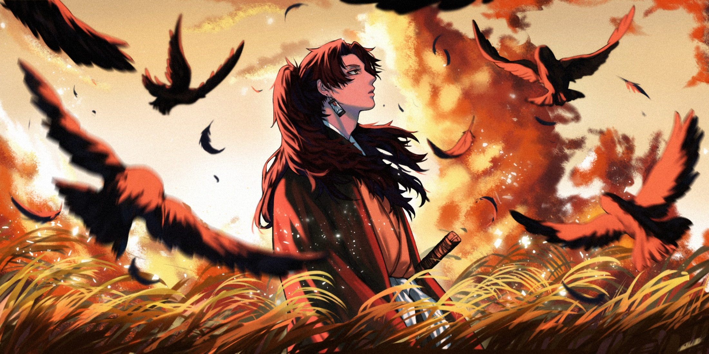

Em Honra a Yoriichi Tsugikuni: A Chama Imortal
Yoriichi em um campo, Japão, 1920.
Neste tributo, erguemos nossos corações e palavras em honra a Yoriichi Tsugikuni, um personagem que transcende o tempo e toca os corações dos que o conhecem. Sua jornada através do mundo de Demom Slayer não apenas inspirou, mas também deixou uma marca profunda na narrativa e nas mentes dos fãs. Hoje, celebramos sua coragem, determinação e inabalável devoção à justiça.
Yoriichi, você é uma chama que arde eternamente em nossos pensamentos. Sua habilidade incomparável como usuário da Respiração do Sol, a dança radiante que bania a escuridão demoníaca, é uma prova de sua mestria e herança excepcionais. Sua força não estava apenas em suas habilidades, mas também em sua compaixão. Você dedicou sua vida a proteger os inocentes, a enfrentar o mal com uma coragem inigualável, sem jamais vacilar.
Como um farol de esperança, você iluminou o caminho para aqueles que se sentiam perdidos nas sombras. Sua sabedoria, humildade e gentileza resplandeciam como raios de sol, aquecendo os corações daqueles que cruzavam seu caminho. Sua relação com sua irmã, Michikatsu, revelou a profundidade de seu amor e os laços inquebráveis que unem uma família.
Cada batalha que travou, cada sacrifício que fez, serviu como testemunho de sua devoção à causa. Sua determinação implacável e espírito indomável encorajaram os bravos Guerreiros Hashira a continuar lutando, mesmo diante das adversidades mais terríveis. Você personificou o conceito de honra e persistência, um exemplo a ser seguido por todos os que buscam um mundo melhor.
Neste momento solene, lembramos de você não apenas como um personagem fictício, mas como um símbolo de valores nobres e coragem desinteressada. Sua presença continua a inspirar gerações, lembrando-nos de que a luz sempre pode ser encontrada mesmo nas mais profundas trevas. Ainda que sua história tenha chegado ao fim, seu legado permanece vivo, tocando aqueles que se aventuram no universo de Demom Slayer.
Hoje, elevamos nossas palavras e pensamentos em homenagem a Yoriichi Tsugikuni, um verdadeiro herói cuja influência transcende as páginas e telas. Sua chama imortal continuará a brilhar como um farol de esperança, orientando-nos nas encruzilhadas da vida. Descanse em paz, grande guerreiro, sabendo que sua memória viverá para sempre em nossos corações.

1.
Habilidade como usuário da Respiração do Sol.
2.
Dança radiante que bania a escuridão demoníaca.
3.
Exemplo de honra e persistência.
4.
Coragem inabalável.
5.
Dedicação à proteção dos inocentes.
6.
Enfrentar o mal sem vacilar.
7.
Relação com sua irmã Michikatsu.
8.
Amor e laços inquebráveis de família.
9.
Inspirar outros a lutar através de sua determinação.
10.
Espírito indomável.